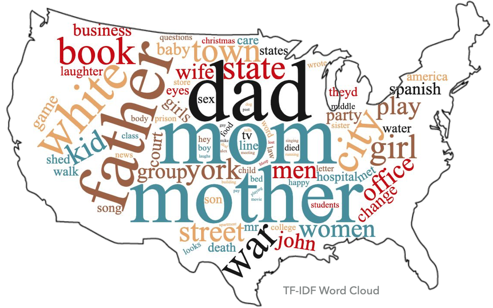

Any Recommendations?
Using "This American Life" podcasts to create a recommender.

Where to begin? Literally! I've always been into the idea of podcasts, but I could never get into podcasts because of how "all over the place" the topics of any given podcast can seem. My goal for this project was to determine what are the general topics that "This American Life" podcast talks about, and to create an app that can recommend other podcasts that seem to talk about similar things. In this porject I scraped the podcast transcripts from the main website, I did topic modeling over the enitre corpus to find those topics, and I used a pretrained word embedding neural network in conjunction with cosine similarity to make recommendations and an advanced search engine.
Innitial Exploration
On their website, This American Life offers a page in which they recommend several categories. This is the closest thing they have to a recommender. However, what you will find are general themes to get a user interested, and links to those themes' playlists which seem to be as useless as searching through their entire archive. What I was looking for wasn't a set of click-bate titles of playlists to get me enthralled, but instead, real topics that are actually touched upon in the podcasts so that I can get a feel for the tone being set by This American Life.
After scraping the provided transcriptions, I had started my dive with the above word cloud then dug deeper with topic modeling. The word cloud consists of the most frequently used words throughout all the podcasts. Dad, mom, mother, father, wife, women, men, baby, and sister are some of the top words that you may be able to spot out. They all relate to family which is one of the topics found through topic modeling in the table below. Now that's American! Though these words suggest a clear topic, other big words, indicating high frequency, like war, book, white, and city, aren't as clear. Therefor, topic modeling is a must if the goal is clear yet general topics.
My Discovered Topics
| Topic | Most Frequent Words in Topic |
|---|---|
| Politics | president, government |
| Immigration | Spanish, ICE |
| Family | dad, mom |
| Schooling | students, school |
| Crime/ Policing | police, crime |
| War | war, military |
| Food | chicken, eat |
| Religion/ Religious Culture | Christmas, church |
| Miscellaneous | music, play, girl |
So these are the topics that came up, that one may say "define" America or at least "This American Life." The Miscellaneous category was the biggest, mainly consisting of media words having to do with music and television. This topic also encompasses the podcast episodes that they say in their website they use to experiment or often try new things. It was rewarding to see a topic strongly correlated toward Family as seen in the word cloud, and even War as seen by Texas in the same cloud.
Want More?
If you haven't already, check out this video presentation I did on YouTube where I talk about this project and show you what the Flask App looks like.
You can also look into the Python code I wrote on my GitHub.